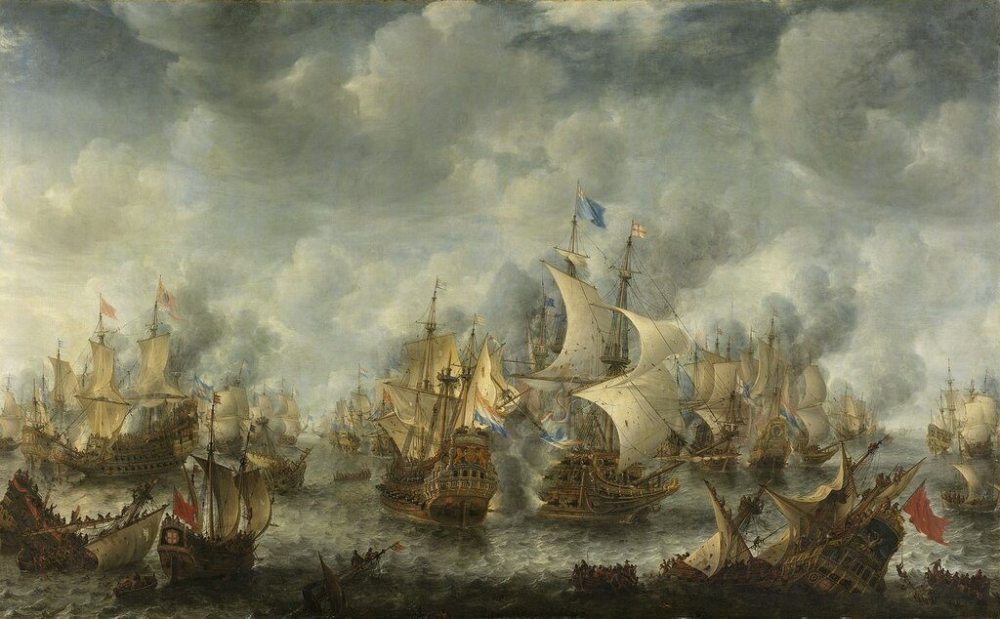
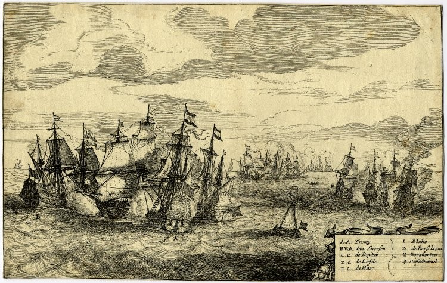

От Commander and Master - к Master and Commander
Оставь подбирать за Тигром шакалу и иже с ним.
Волк чужого не ищет, Волк довольствуется своим!
Киплинг ЗАКОН ДЖУНГЛЕЙ (Пер. В. Топорова)
В предыдущей части нашего рассказа мы установили, что к середине XVII века на должности капитанов малых кораблей военного флота Англии стали назначать людей, не обязательно имеющих дворянское происхождение, но проявивших себя на предыдущей морской службе. Добавим к этому, что среди новых командиров кораблей появилось большое число бывших капитанов купеческих судов. Мы уже упоминали, например, успешного адмирала Джона Лоусона, бывшего шкипера угольщика. Это связано было, как уже говорилось, с чисткой командных кадров от представителей роялистов, а также явилось отражением того факта, что Парламент и Республика (Commonwealth) были тесно связаны с купеческим сословием.
[Для справки отметим, что после Реставрации ситуация изменилась и назначения на командные должности лиц с торгового флота стали лишь исключением. Более того, началась «отбраковка» из командного состава лиц, назначенных в предыдущий период. Особенно интенсивно это отмечалось в 1660-1661 годах. Формулировки для увольнения капитанов были самые разные, такие например, как «Анабаптист», или «известный старый враг», или «его жена – квакерша». На место «вычищенных» пришли новые капитаны, отбираемые по принципу лояльности.]
Как видно из приложенных ранее списков, командиры кораблей с экипажами не более 70 человек и вооружением до 12 пушек получали звание Commander and Master. Они могли получить продвижение по службе, стать командиром более крупного корабля со званием Captain и иметь на нем помощника, отвечающего за кораблевождение (у нас такого человека принято называть штурман), который находился в звании Master. Заглядывая вперед, отметим, что эта система званий на английском флоте просуществовала почти полтора века, на протяжении которого на флоте сложился достаточно устойчивый и постоянный офицерский корпус.
Серьезным испытанием, с которым столкнулась новая система комплектования командных кадров, стала Первая англо-голландская война (1652-1654); английский флот выдержал этот экзамен в целом успешно.

Ян Авраам Беерстратен. Сражение при Схевенингене 10 августа 1653 г. - финальное сражение Первой англо-голландской войны. Rijksmuseum , Амстердам
Но выявилось и одно слабое звено. О нем говорит адмирал Пенн в письме к Кромвелю от 2 июня 1652 года. Пенн возражает против назначения на командные должности на мобилизованных для военного флота торговых судах их прежних капитанов, особенно если последние являются одновременно и собственниками этих кораблей. Они не так настойчивы в бою, как профессиональные военные моряки. Они не только бездумно жгут порох и тратят ядра в ходе боевых действий, но и всячески стремятся избежать серьезных повреждений принадлежащих им кораблей. (Кто читал мои прежние записки о галерных сражениях шестнадцатого века с участием Джованни Андреа Дориа, наверняка помнит, что, будучи собственником галер, он очень беспокоился за их сохранность в бою.)
Правота Пенна была подтверждена всего лишь полгода спустя, в сражении при мысе Дунгенес 10 декабря 1652 года, которое англичане проиграли. Некоторые из капитанов мобилизованных купеческих судов отказались принимать участие в бою, настаивая на своем традиционном праве вступать в бой или выходить из него по собственному усмотрению.

Сражение при Дунгенесе 30 ноября 1652 (10 декабря по новому стилю). Гравюра неизвестного художника. Британский музей, Лондон
После Дунгенеса в управление флотом были внесены существенные изменения. Было принято решение поставить все мобилизованные торговые суда под командование офицеров военного флота. (Отметим, что позже, в 1673 году, капитаны мобилизуемых для нужд военного флота купеческих судов обратились с петицией вернуть прежнюю практику назначения их командирами этих кораблей, однако получили отказ.) Для удобства управления флот делился на эскадры под комадованием флагманов. В целях повышения согласованности действий были разработаны и введены в действие Боевые инструкции (Sailing and Fighting Instructions), очерчивающие круг ответственности должностных лиц в бою и повышающие роль адмирала.
Таким образом сделан был еще один шаг к формированию постоянного резерва офицеров военного флота (номенклатура, однако), для замещения командных должностей на мобилизуемых торговых судах. В перечне этих должностей впервые официально появилась должность Commander and Master.
Как, какими указами логичный термин Commander and Master превратился в Master and Commander мне установить не удалось. Может быть, это произошло потому, что с 1674 года носители этого звания обязаны были сдать экзамен в Тринити Хаус, даже если они до назначения на этот пост командовали более крупным кораблем. Этим решением значение квалификации «master» (штурман) получало больший авторитет и перешло в названии чина на первое место? Ведь до этого присвоение звания Commander and Master осуществлялось только по комиссии (диплому), выдаваемому соответствующим органом Адмиралтейства, и звание Commander как бы подчеркивало этот факт. Вся эта история напоминает мне мою офицерскую карьеру: начинал я с «инженер-лейтенанта корабельной службы», затем стал «капитан-лейтенантом-инженером» и, наконец, потерял свою «инженерную сущность», превратившись просто в «капитана 3 ранга». По крайней мере, это очень напоминает историю звания Commander and Master – Master and Commander – Commander.
Продолжим в следующий раз.